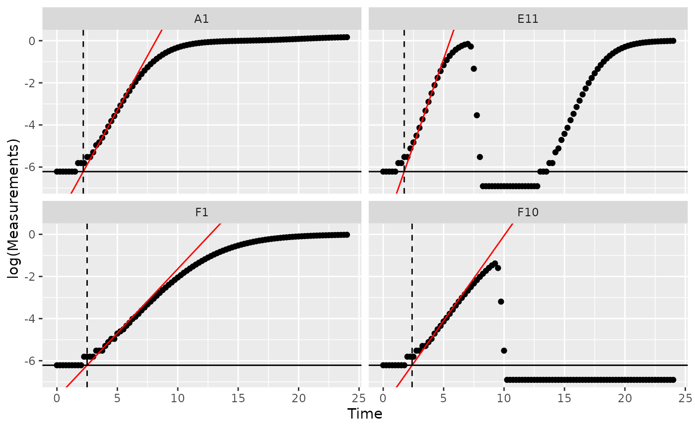
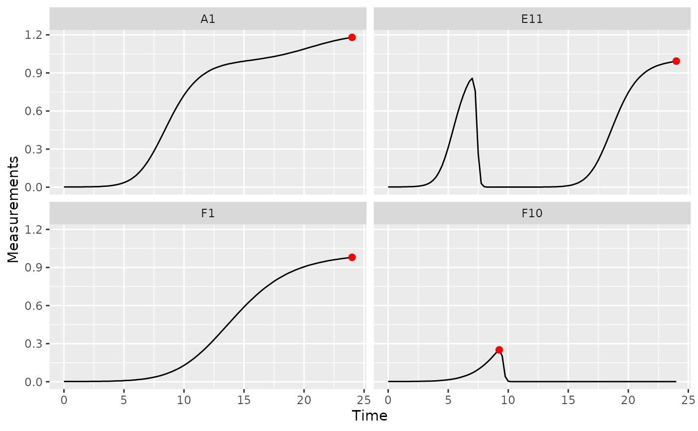
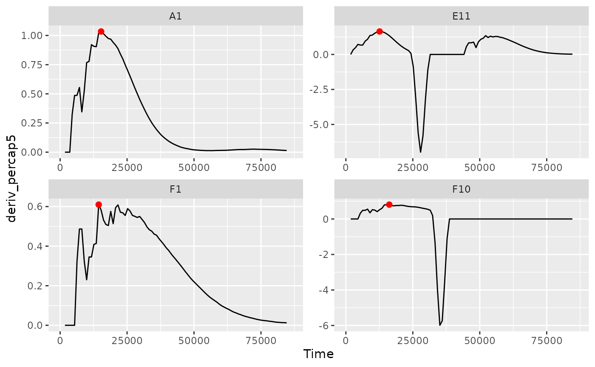
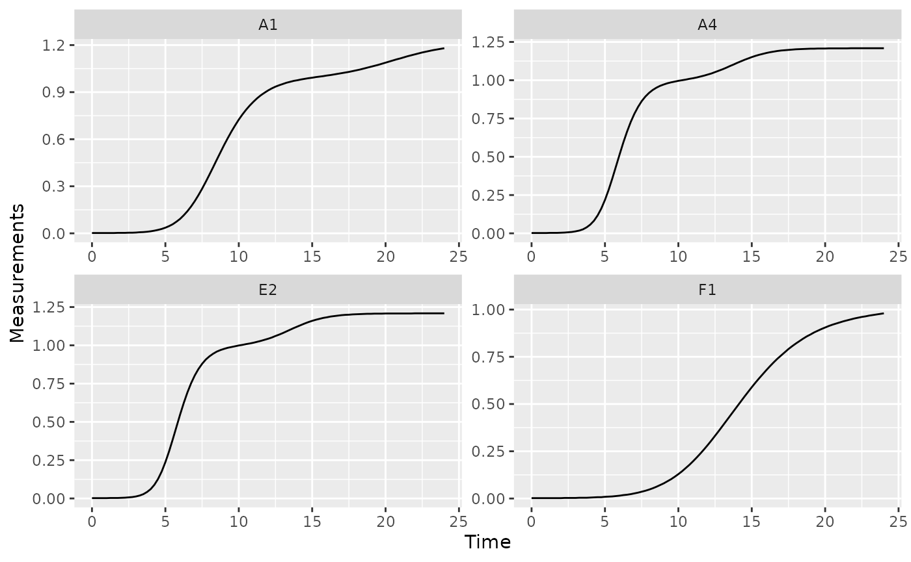
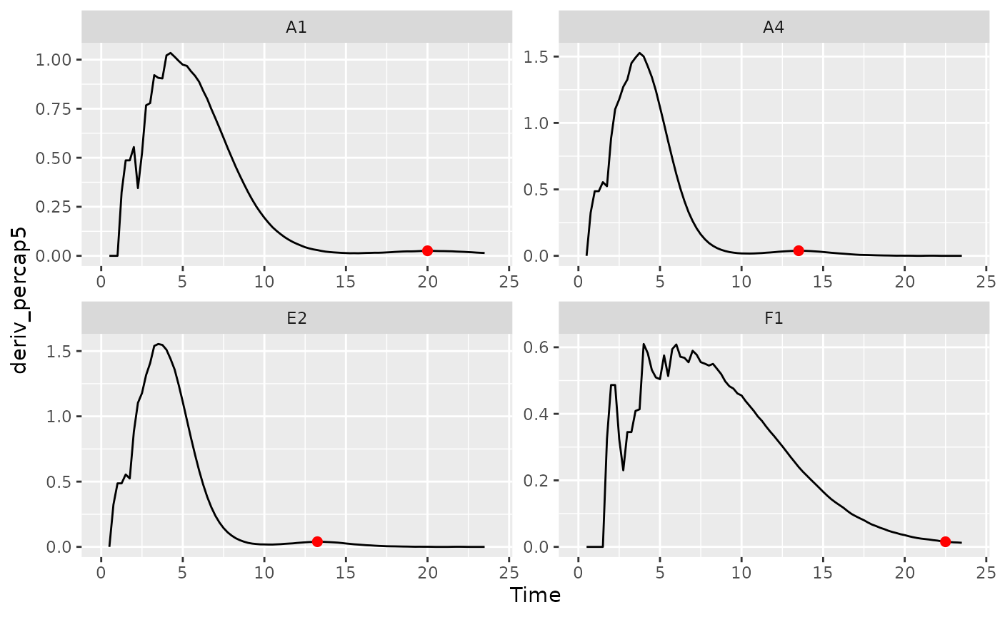
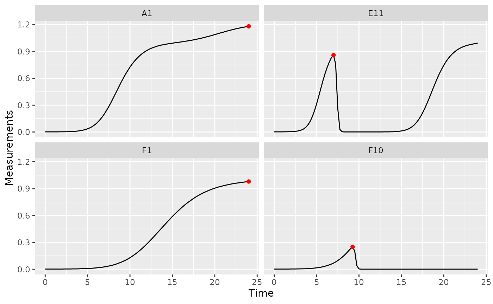
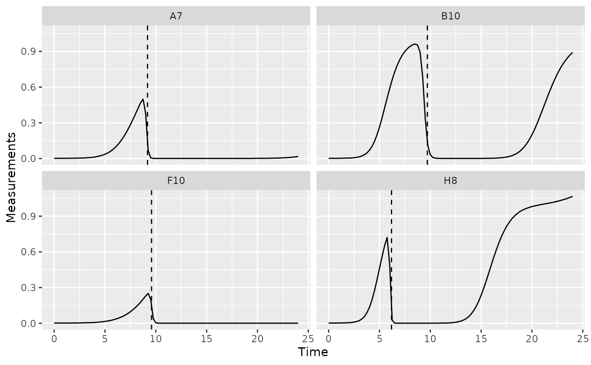

Where are we so far?
- Introduction:
vignette("gcplyr") - Importing and transforming data:
vignette("import_transform") - Incorporating design information:
vignette("incorporate_designs") - Pre-processing and plotting your data:
vignette("preprocess_plot") - Processing your data:
vignette("process") -
Analyzing your data:
vignette("analyze") - Dealing with noise:
vignette("noise") - Statistics, merging other data, and other resources:
vignette("conclusion")
So far, we’ve imported and transformed our measures, combined them with our design information, pre-processed, processed, and plotted our data. Now we’re going to analyze our data by summarizing our growth curves into a number of metrics.
If you haven’t already, load the necessary packages.
library(gcplyr)
#> ##
#> ## gcplyr (Version 0.12.3, Build Date: 2023-01-30)
#> ## See http://github.com/mikeblazanin/gcplyr for additional documentation
#> ## Please cite software as:
#> ## Blazanin, Michael. 2023. 'gcplyr: manipulate and analyze growth
#> ## curve data.' R package version 0.12.3
#> ##
library(dplyr)
#>
#> Attaching package: 'dplyr'
#> The following objects are masked from 'package:stats':
#>
#> filter, lag
#> The following objects are masked from 'package:base':
#>
#> intersect, setdiff, setequal, union
library(ggplot2)
#This code was previously explained
#Here we're re-running it so it's available for us to work with
example_tidydata <- trans_wide_to_tidy(example_widedata_noiseless,
id_cols = "Time")
example_design <- make_design(
pattern_split = ",", nrows = 8, ncols = 12,
"Bacteria_strain" = make_designpattern(
values = paste("Strain", 1:48),
rows = 1:8, cols = 1:6, pattern = 1:48, byrow = TRUE),
"Bacteria_strain" = make_designpattern(
values = paste("Strain", 1:48),
rows = 1:8, cols = 7:12, pattern = 1:48, byrow = TRUE),
"Phage" = make_designpattern(
values = c("No Phage"), rows = 1:8, cols = 1:6, pattern = "1"),
"Phage" = make_designpattern(
values = c("Phage Added"), rows = 1:8, cols = 7:12, pattern = "1"))
ex_dat_mrg <- merge_dfs(example_tidydata, example_design)
#> Joining, by = "Well"
ex_dat_mrg$Well <-
factor(ex_dat_mrg$Well,
levels = paste(rep(LETTERS[1:8], each = 12), 1:12, sep = ""))
ex_dat_mrg <- group_by(ex_dat_mrg, Well, Bacteria_strain, Phage)
ex_dat_mrg <-
mutate(ex_dat_mrg,
deriv = calc_deriv(x = Time, y = Measurements, x_scale = 3600),
deriv_percap5 = calc_deriv(x = Time, y = Measurements,
percapita = TRUE, blank = 0,
window_width_n = 5, trans_y = "log",
x_scale = 3600))
sample_wells <- c("A1", "F1", "F10", "E11")Analyzing data with summarize
Ultimately, analyzing growth curves requires summarizing the entire time series of data by some metric or metrics. For instance, we may calculate metrics like:
- the maximum density
- the total area under the curve
- the lag time (approximated as the time from the start until maximum per-capita growth rate is achieved)
- the maximum per-capita growth rate
- the density when a diauxic shift occurs
- the time until diauxic shift occurs
- the peak per-capita growth rate after a diauxic shift
- the peak density before a decline from phage predation
- the time when bacteria drop below some density because of phage predation
gcplyr contains a number of functions that make it
easier to carry out these calculations. Additionally,
gcplyr functions are flexible enough that you can use them
in designing your own metric calculations. The following sections
highlight general-use gcplyr functions and provide examples
to calculate the common metrics above.
But first, we need to familiarize ourselves with one more
dplyr function: summarize. Why? Because the
upcoming gcplyr analysis functions must be used
within dplyr::summarize. If you’re already
familiar with dplyr’s summarize, feel free to
skip the primer in the next section. If you’re not familiar
yet, don’t worry! Continue to the next section, where I provide a primer
that will teach you all you need to know on using summarize
with gcplyr functions.
Another brief primer on dplyr: summarize
Here we’re going to focus on the summarize function from
dplyr, which must be used with the
group_by function we covered in our first primer: A brief primer on dplyr.
summarize carries out user-specified calculations on
each group in a grouped data.frame independently,
producing a new data.frame where each group is now just a
single row.
For growth curves, this means we will:
-
group_byour data so that every well is a group -
summarizeeach well with calculations like maximum density or area under the curve
Since summarize will drop columns that the data aren’t
grouped by and that aren’t summarized, we will typically want to list
all of our design columns for group_by, along with the
plate name and well. Again, make sure you’re not grouping by
Time, Absorbance, or anything else that varies within a well,
since if you do dplyr will group timepoints within a well
separately.
In the next section, I provide a simple example of how the
max function is used with group_by and
summarize to calculate lag time and the maximum per-capita
growth rate. If you want to learn more, dplyr has extensive
documentation and examples of its own online. Feel free to explore them
as desired, but this primer and the coming example should be sufficient
to use the remaining gcplyr functions.
Summarizing with simple base functions: maximum density and growth rate
One of the most common steps is calculating global maxima (or minima)
of data. For instance, with bacterial growth, maximum density or growth
rate are some of the most commonly measured traits. Here, we’ll show how
to find them using the built-in max function.
First, we need to group our data. As before, group_by
simply requires the data.frame to be grouped, and the names
of the columns we want to group by.
#First, drop unneeded columns (optional)
ex_dat_mrg <- dplyr::select(ex_dat_mrg,
Time, Well, Measurements, Bacteria_strain, Phage,
deriv, deriv_percap5)
#Then, carry out grouping
ex_dat_mrg <- group_by(ex_dat_mrg, Bacteria_strain, Phage, Well)Then, we run summarize. Just like for
mutate, we specify:
- the name of the variable we want results saved to
- the function that calculates the summarized results
In this case, the function should return just a single value for each
group. For instance, in the code below we’ve calculated the maximum of
the Measurements column, and saved it in a column named
max_dens (note that we need to specify
na.rm = TRUE to tell max to ignore all
NA values). We’ve saved the output from
summarize to a new data.frame:
ex_dat_mrg_sum, short for
example_data_merged_summarized.
ex_dat_mrg_sum <- summarize(ex_dat_mrg,
max_dens = max(Measurements, na.rm = TRUE))
#> `summarise()` has grouped output by 'Bacteria_strain', 'Phage'. You can
#> override using the `.groups` argument.
head(ex_dat_mrg_sum)
#> # A tibble: 6 × 4
#> # Groups: Bacteria_strain, Phage [6]
#> Bacteria_strain Phage Well max_dens
#> <chr> <chr> <fct> <dbl>
#> 1 Strain 1 No Phage A1 1.18
#> 2 Strain 1 Phage Added A7 0.499
#> 3 Strain 10 No Phage B4 1.21
#> 4 Strain 10 Phage Added B10 0.962
#> 5 Strain 11 No Phage B5 1.21
#> 6 Strain 11 Phage Added B11 1.03If you want additional characteristics, you simply add them to the
summarize. For instance, if we want the time when the maximum density
occurs, you just add that as a second argument. In this case, we use the
which.max function, which returns the index of the maximum
value, to get the index of the Time when the maximum
occurs, and save it to a column titled max_time:
ex_dat_mrg_sum <- summarize(ex_dat_mrg,
max_dens = max(Measurements, na.rm = TRUE),
max_time = Time[which.max(Measurements)])
#> `summarise()` has grouped output by 'Bacteria_strain', 'Phage'. You can
#> override using the `.groups` argument.
head(ex_dat_mrg_sum)
#> # A tibble: 6 × 5
#> # Groups: Bacteria_strain, Phage [6]
#> Bacteria_strain Phage Well max_dens max_time
#> <chr> <chr> <fct> <dbl> <dbl>
#> 1 Strain 1 No Phage A1 1.18 86400
#> 2 Strain 1 Phage Added A7 0.499 31500
#> 3 Strain 10 No Phage B4 1.21 85500
#> 4 Strain 10 Phage Added B10 0.962 30600
#> 5 Strain 11 No Phage B5 1.21 70200
#> 6 Strain 11 Phage Added B11 1.03 86400And we can quite easily plot such summarized values as a horizontal
line or vertical line on top of our original growth curves data with the
geom_hline or geom_vline functions:
ggplot(data = dplyr::filter(ex_dat_mrg, Well %in% sample_wells),
aes(x = Time, y = Measurements)) +
geom_line() +
facet_wrap(~Well) +
geom_hline(data = dplyr::filter(ex_dat_mrg_sum, Well %in% sample_wells),
aes(yintercept = max_dens), lty = 2) +
geom_vline(data = dplyr::filter(ex_dat_mrg_sum, Well %in% sample_wells),
aes(xintercept = max_time), lty = 2)Alternatively, we could plot these summary points as a point:
ggplot(data = dplyr::filter(ex_dat_mrg, Well %in% sample_wells),
aes(x = Time, y = Measurements)) +
geom_line() +
facet_wrap(~Well) +
geom_point(data = dplyr::filter(ex_dat_mrg_sum, Well %in% sample_wells),
aes(x = max_time, y = max_dens),
size = 2, color = "red")
We can also use the same process to find the maximum of the per-capita growth rates that we previously calculated:
ex_dat_mrg_sum <- summarize(ex_dat_mrg,
max_percap = max(deriv_percap5, na.rm = TRUE),
max_percap_time = Time[which.max(deriv_percap5)])
#> `summarise()` has grouped output by 'Bacteria_strain', 'Phage'. You can
#> override using the `.groups` argument.
ggplot(data = dplyr::filter(ex_dat_mrg, Well %in% sample_wells),
aes(x = Time, y = deriv_percap5)) +
geom_line() +
facet_wrap(~Well) +
geom_point(data = dplyr::filter(ex_dat_mrg_sum, Well %in% sample_wells),
aes(x = max_percap_time, y = max_percap),
size = 2, color = "red")
#> Warning: Removed 4 rows containing missing values (`geom_line()`).
Summarizing with simple gcplyr functions: area under the curve
One common metric of growth curves is the total area under the curve.
gcplyr has an auc function to easily calculate
this area. Just like min and max, it needs to
be used inside summarize on a data.frame that
has been grouped.
To use auc, simply specify the x and y data whose
area-under-the-curve you want to calculate. Here, we calculate the
area-under-the-curve of the Measurements column and save it
to a column titled auc.
ex_dat_mrg_sum <-
summarize(ex_dat_mrg,
auc = auc(x = Time, y = Measurements))
#> `summarise()` has grouped output by 'Bacteria_strain', 'Phage'. You can
#> override using the `.groups` argument.
head(ex_dat_mrg_sum)
#> # A tibble: 6 × 4
#> # Groups: Bacteria_strain, Phage [6]
#> Bacteria_strain Phage Well auc
#> <chr> <chr> <fct> <dbl>
#> 1 Strain 1 No Phage A1 57291.
#> 2 Strain 1 Phage Added A7 3856.
#> 3 Strain 10 No Phage B4 73505.
#> 4 Strain 10 Phage Added B10 22156.
#> 5 Strain 11 No Phage B5 75289.
#> 6 Strain 11 Phage Added B11 27966.Finding local extrema: peak density, maximum growth rate, lag time, and diauxic shifts
We’ve previously shown how you can use max and
min to find the global maxima and minima in data. However,
what about local maxima or minima? That is, peaks and valleys
that are obvious to the eye but aren’t the highest or smallest values in
the entire time series. In this section, we’ll show how you can use the
gcplyr functions first_peak and
find_local_extrema to find points that are local maxima or
minima in your data.
Finding the first peak: peak density, maximum growth rate, and lag time
One particular special case we’re often interested in is the first peak in some set of data. For instance, when bacteria are grown with phages, the density they reach before they start declining due to phage predation is a measure of their susceptibility to the phage. Alternatively, in the previous section we found the global maximum per-capita growth rate, but what if some of these maxima happened after near-extinction and recovery and we wanted to only find the peak growth rate before near-extinction?
Peak density
Let’s start with the former example: finding the peak of density.
To identify the first peak, we can use the gcplyr
function first_peak. first_peak simply
requires the y data you want to identify the peak in. In
this case, that’s Measurements. We also need to specify
whether we want the function to return the
index of the first peak, the x value of the
peak, or the y value of the peak. We’ll get the
x and y values, saving them in columns
first_peak_x and first_peak_y, respectively.
As usual, first_peak needs to be used inside of a
summarize command on data that has already been
grouped.
ex_dat_mrg_sum <-
summarize(ex_dat_mrg,
first_peak_x = first_peak(x = Time, y = Measurements, return = "x"),
first_peak_y = first_peak(x = Time, y = Measurements, return = "y"))
#> `summarise()` has grouped output by 'Bacteria_strain', 'Phage'. You can
#> override using the `.groups` argument.
head(ex_dat_mrg_sum)
#> # A tibble: 6 × 5
#> # Groups: Bacteria_strain, Phage [6]
#> Bacteria_strain Phage Well first_peak_x first_peak_y
#> <chr> <chr> <fct> <dbl> <dbl>
#> 1 Strain 1 No Phage A1 86400 1.18
#> 2 Strain 1 Phage Added A7 31500 0.499
#> 3 Strain 10 No Phage B4 71100 1.21
#> 4 Strain 10 Phage Added B10 30600 0.962
#> 5 Strain 11 No Phage B5 70200 1.21
#> 6 Strain 11 Phage Added B11 18900 0.439Let’s plot these points on all the wells to confirm they are what we expect:
ggplot(data = ex_dat_mrg, aes(x = Time, y = Measurements)) +
geom_line() +
facet_wrap(~Well, nrow = 8, ncol = 12) +
geom_point(data = ex_dat_mrg_sum,
aes(x = first_peak_x, y = first_peak_y),
color = "red", size = 1.5)
That worked great! In some cases, you might find that
first_peak is not sensitive enough, or is too sensitive,
for your data. In those cases, you can adjust the tuning parameters to
make first_peak more or less sensitive to small peaks and
valleys. For first_peak, the tuning parameters are
window_width, window_width_n, and
window_height:
-
window_widthdetermines the width of the window used to search for peaks and valleys, in units ofx -
window_width_ndetermines the width of the window, in units of number of data points -
window_heightdetermines the shortest peak or shallowest valley the window will cross, in units ofy
Maximum growth rate and lag time
Now let’s look at the other example: using first_peak to
find the first peak in per-capita growth rate. Finding this point tells
us both what the maximum growth rate is, and how long it took the cells
to reach that rate (a measure of lag time).
ex_dat_mrg_sum <-
summarize(ex_dat_mrg,
max_growth_rate = first_peak(x = Time, y = deriv_percap5,
return = "y"),
lag_time = first_peak(x = Time, y = deriv_percap5,
return = "x"))
#> `summarise()` has grouped output by 'Bacteria_strain', 'Phage'. You can
#> override using the `.groups` argument.
head(ex_dat_mrg_sum)
#> # A tibble: 6 × 5
#> # Groups: Bacteria_strain, Phage [6]
#> Bacteria_strain Phage Well max_growth_rate lag_time
#> <chr> <chr> <fct> <dbl> <dbl>
#> 1 Strain 1 No Phage A1 1.03 15300
#> 2 Strain 1 Phage Added A7 1.03 15300
#> 3 Strain 10 No Phage B4 1.59 12600
#> 4 Strain 10 Phage Added B10 1.59 12600
#> 5 Strain 11 No Phage B5 1.65 12600
#> 6 Strain 11 Phage Added B11 1.65 12600
ggplot(data = dplyr::filter(ex_dat_mrg, Well %in% sample_wells),
aes(x = Time, y = deriv_percap5)) +
geom_line() +
facet_wrap(~Well, scales = "free") +
geom_point(data = dplyr::filter(ex_dat_mrg_sum, Well %in% sample_wells),
aes(x = lag_time, y = max_growth_rate),
color = "red", size = 2)
#> Warning: Removed 4 rows containing missing values (`geom_line()`).
But what if you want to find an extrema that’s not the first
peak? In the next section, we’ll learn how to use
find_local_extrema to identify all kinds of local
extrema.
Finding any kind of local extrema: diauxic shifts
We’ve seen how first_peak can be used to identify the
first peak in data. But what about other kinds of local extrema? The
first minimum? The second peak?
In order to identify these kinds of extrema, we can use the
more-general function find_local_extrema. In fact,
first_peak is really just a special case of
find_local_extrema. Just like first_peak,
find_local_extrema only requires a vector of y data in
which to find the local extrema, and can return the index,
x value, or y value of the extrema it
finds.
Unlike first_peak, find_local_extrema
returns a vector containing all of the local extrema found
under the given settings. Users can alter which kinds of local extrema
are reported using the arguments return_maxima,
return_minima, and return_endpoints. However,
find_local_extrema will always return a vector of all the
extrema found, so users must use brackets to select which one they want
summarize to save.
Let’s dig into an example: identifying diauxic shifts. To refresh your memory on what we saw in the derivatives article, here’s a plot of the derivative of some of the wells over time.
ggplot(data = dplyr::filter(ex_dat_mrg, Well %in% sample_wells),
aes(x = Time, y = deriv)) +
geom_line() +
facet_wrap(~Well, scales = "free")
#> Warning: Removed 1 row containing missing values (`geom_line()`).
In fact, if we look at some more of the wells with no phage added, we’ll see a similar pattern repeatedly.
sample_wells <- c("A1", "A4", "E2", "F1")
ggplot(data = dplyr::filter(ex_dat_mrg, Well %in% sample_wells),
aes(x = Time, y = deriv)) +
geom_line() +
facet_wrap(~Well, scales = "free")
#> Warning: Removed 1 row containing missing values (`geom_line()`).
This second, slower, burst of growth after the first wave of growth is common in bacterial growth curves and is called diauxic growth.
How could we identify the time when the bacteria switch from their
first burst of growth to their second? We can find the second minima in
the deriv values (where the first minima is going to be at
the start of the growth curve). To do so, we specify to
find_local_extrema that we want return = "x"
and we don’t want maxima returned:
ex_dat_mrg_sum <-
summarize(ex_dat_mrg,
diauxie_time = find_local_extrema(x = Time, y = deriv, return = "x",
return_maxima = FALSE, return_minima = TRUE,
window_width_n = 39)[2])
#> `summarise()` has grouped output by 'Bacteria_strain', 'Phage'. You can
#> override using the `.groups` argument.
#Plot data with vertical line at detected diauxie
ggplot(data = dplyr::filter(ex_dat_mrg, Well %in% sample_wells),
aes(x = Time, y = deriv)) +
geom_line() +
facet_wrap(~Well, scales = "free") +
geom_vline(data = dplyr::filter(ex_dat_mrg_sum, Well %in% sample_wells),
aes(xintercept = diauxie_time), lty = 2)
#> Warning: Removed 1 row containing missing values (`geom_line()`).
Now that we’ve found the point where the bacteria switch, let’s
identify the density where the diauxic shift occurs. First, we’ll save
the index where the diauxic shift occurs to a column titled
diaxuie_idx. Then, we can get the Measurements
value at that index. (Note that it wouldn’t work to just specify
return = "y", because the y values in this
case are the deriv values).
ex_dat_mrg_sum <-
summarize(
ex_dat_mrg,
diauxie_time = find_local_extrema(x = Time, y = deriv, return = "x",
return_maxima = FALSE, return_minima = TRUE,
window_width_n = 39)[2],
diauxie_idx = find_local_extrema(x = Time, y = deriv, return = "index",
return_maxima = FALSE, return_minima = TRUE,
window_width_n = 39)[2],
diauxie_dens = Measurements[diauxie_idx])
#> `summarise()` has grouped output by 'Bacteria_strain', 'Phage'. You can
#> override using the `.groups` argument.
#Plot data with a point at the moment of diauxic shift
ggplot(data = dplyr::filter(ex_dat_mrg, Well %in% sample_wells),
aes(x = Time, y = Measurements)) +
geom_line() +
facet_wrap(~Well, scales = "free") +
geom_point(data = dplyr::filter(ex_dat_mrg_sum, Well %in% sample_wells),
aes(x = diauxie_time, y = diauxie_dens),
size = 2, color = "red")Something that was hard to see on the density plot has now been easily quantified and can be visualized exactly where the shift occurs.
Combining subsets and local extrema: diauxic growth rate
In the previous section we identified when the bacteria shifted into
their second burst of growth. Can we find out what the peak per-capita
growth rate was during that second burst? Yes, we just have to put
together some of the things we’ve learned already. In particular, we’re
going to combine our use of find_local_extrema,
max, and subsets to find the
max(deriv_percap_hr) during the times after the diauxic
shift:
ex_dat_mrg_sum <-
summarize(
ex_dat_mrg,
diauxie_time = find_local_extrema(x = Time, y = deriv, return = "x",
return_maxima = FALSE, return_minima = TRUE,
window_width_n = 39)[2],
diauxie_percap = max(deriv_percap5[Time >= diauxie_time], na.rm = TRUE),
diauxie_percap_time =
Time[Time >= diauxie_time][
which.max(deriv_percap5[Time >= diauxie_time])]
)
#> `summarise()` has grouped output by 'Bacteria_strain', 'Phage'. You can
#> override using the `.groups` argument.
#Plot data with a point at the moment of peak diauxic growth rate
ggplot(data = dplyr::filter(ex_dat_mrg, Well %in% sample_wells),
aes(x = Time, y = deriv_percap5)) +
geom_line() +
facet_wrap(~Well, scales = "free") +
geom_point(data = dplyr::filter(ex_dat_mrg_sum, Well %in% sample_wells),
aes(x = diauxie_percap_time, y = diauxie_percap),
size = 2, color = "red")
#> Warning: Removed 4 rows containing missing values (`geom_line()`).
Finding threshold-crossings: extinction time and time to density
We’ve previously shown how you can find local and global extrema in
data, but what if you just want to find when the data passes some
threshold value? In this section, we’ll show how you can use the
gcplyr functions first_below and
find_threshold_crosses to find the points when your data
crosses user-defined thresholds.
Finding the first point below a threshold: extinction time
One common case of threshold-crossing we might be interested in is the first point that our data falls below some threshold density. For instance, when bacteria are grown with phages, the amount of time it takes before the bacterial population falls below some threshold can be a proxy metric for how sensitive the bacteria are to that phage.
Let’s take a look at the absorbance values in some example wells with both bacteria and phages:
sample_wells <- c("A7", "B10", "F10", "H8")
ggplot(data = dplyr::filter(ex_dat_mrg, Well %in% sample_wells),
aes(x = Time, y = Measurements)) +
geom_line() +
facet_wrap(~Well)
Ok great. Now let’s suppose that I think that an absorbance of 0.15
is a good threshold for extinction in my experiment. How could we use
first_below to calculate the time when that first occurs
across all our different wells? Well, primarily,
first_below simply needs our x and
y values, the threshold we want to use, as
well as whether we want it to return the index
of the first point below the threshold, or the x value of
that point (since we care about the time it happened here, we’ll do the
latter). Additionally, we’ll specify that we don’t care if the
startpoint is below the threshold: we only care when the data goes from
above to below it.
ex_dat_mrg_sum <-
summarize(
ex_dat_mrg,
extin_time = first_below(x = Time, y = Measurements, threshold = 0.15,
return = "x", return_endpoints = FALSE))
#> `summarise()` has grouped output by 'Bacteria_strain', 'Phage'. You can
#> override using the `.groups` argument.
head(ex_dat_mrg_sum)
#> # A tibble: 6 × 4
#> # Groups: Bacteria_strain, Phage [6]
#> Bacteria_strain Phage Well extin_time
#> <chr> <chr> <fct> <dbl>
#> 1 Strain 1 No Phage A1 NA
#> 2 Strain 1 Phage Added A7 33063.
#> 3 Strain 10 No Phage B4 NA
#> 4 Strain 10 Phage Added B10 34946.
#> 5 Strain 11 No Phage B5 NA
#> 6 Strain 11 Phage Added B11 20319.
ggplot(data = dplyr::filter(ex_dat_mrg, Well %in% sample_wells),
aes(x = Time, y = Measurements)) +
geom_line() +
facet_wrap(~Well) +
geom_vline(data = dplyr::filter(ex_dat_mrg_sum, Well %in% sample_wells),
aes(xintercept = extin_time), lty = 2)
All the phage-added wells have a time when the bacteria drop below that threshold, and the plot clearly shows that it’s right where we’d expect it.
Finding any kind of threshold-crossing: time to density
We’ve seen how first_below can be used to identify the
first point some data crosses below a threshold. But what about other
kinds of threshold-crossing events? The first point it passes above a
threshold? The first point it’s ever below a threshold, including at the
start?
In order to identify these kinds of extrema, we can use the
more-general function find_threshold_crosses. In fact,
first_below is really just a special case of
find_threshold_crosses. Just like first_below,
find_threshold_crosses only requires a
threshold and a vector of y data in which to
find the threshold crosses, and can return the index or
x value of the crossing events it finds.
However, unlike first_below,
find_threshold_crosses returns a vector containing
all of the threshold crossings found under the given settings.
Users can alter which kinds of threshold crossings are reported using
the arguments return_rising, return_falling,
and return_endpoints. However,
find_threshold_crosses will always return a vector of all
the extrema found, so users must use brackets to select which one they
want summarize to save.
Let’s dig into an example: identifying the first time the bacteria reach some density, including if they start at that density
sample_wells <- c("A1", "F1", "F10", "E11")
ex_dat_mrg_sum <-
summarize(
ex_dat_mrg,
time_to_01 = find_threshold_crosses(x = Time, y = Measurements,
threshold = 0.1, return = "x",
return_endpoints = TRUE,
return_falling = FALSE)[1],
time_to_05 = find_threshold_crosses(x = Time, y = Measurements,
threshold = 0.5, return = "x",
return_endpoints = TRUE,
return_falling = FALSE)[1])
#> `summarise()` has grouped output by 'Bacteria_strain', 'Phage'. You can
#> override using the `.groups` argument.
head(ex_dat_mrg_sum)
#> # A tibble: 6 × 5
#> # Groups: Bacteria_strain, Phage [6]
#> Bacteria_strain Phage Well time_to_01 time_to_05
#> <chr> <chr> <fct> <dbl> <dbl>
#> 1 Strain 1 No Phage A1 21913. 31194.
#> 2 Strain 1 Phage Added A7 21913. NA
#> 3 Strain 10 No Phage B4 15300 20624.
#> 4 Strain 10 Phage Added B10 15300 20624.
#> 5 Strain 11 No Phage B5 14543. 19490
#> 6 Strain 11 Phage Added B11 14543. 59955
ggplot(data = dplyr::filter(ex_dat_mrg, Well %in% sample_wells),
aes(x = Time, y = Measurements)) +
geom_line() +
facet_wrap(~Well) +
geom_vline(data = dplyr::filter(ex_dat_mrg_sum, Well %in% sample_wells),
aes(xintercept = time_to_01), lty = 2) +
geom_vline(data = dplyr::filter(ex_dat_mrg_sum, Well %in% sample_wells),
aes(xintercept = time_to_05), lty = 2)
#> Warning: Removed 1 rows containing missing values (`geom_vline()`).
As we can see, find_threshold_crosses has returned the
times when the bacteria reached those densities. We can see that some
bacteria (e.g. those in Well F10) never reached 0.5, so they have an
NA value for time_to_05. By comparing the
times it took each strain to reach an absorbance of 0.1, we could learn
something about how soon the bacteria started growing and how quickly
they grew.
What’s next?
Now that you’ve analyzed your data, you can read about approaches to deal with noise in your growth curve data, or you can read some concluding notes on best practices for running statistics, merging growth curve analyses with other data, and additional resources for analyzing growth curves.
- Introduction:
vignette("gcplyr") - Importing and transforming data:
vignette("import_transform") - Incorporating design information:
vignette("incorporate_designs") - Pre-processing and plotting your data:
vignette("preprocess_plot") - Processing your data:
vignette("process") - Analyzing your data:
vignette("analyze") -
Dealing with noise:
vignette("noise") -
Statistics, merging other data, and other
resources:
vignette("conclusion")